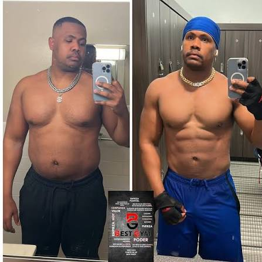

Matias R.: 'Cambió por completo mi perspectiva. Logré bajar 8kg disfrutando del proceso y aprendiendo a comer sin culpas. Recomiendo el plan al 100%'.
Transformá tu cuerpo de manera inteligente
Planes a Medida
Nutrición Flexible
Soporte Diario
Resultados Reales
Mis asesorías online son mucho más que una simple rutina de gimnasio o una dieta de moda: son una experiencia integral que combina ciencia, adaptabilidad y constancia. Su enfoque flexible y su increíble versatilidad las convierten en el método favorito de cientos de personas que buscan optimizar su salud y rendimiento alrededor del mundo. Ya sea en casa o en el gimnasio, los planes personalizados siempre logran conquistar tus metas sin pasar hambre. Por eso, para mis alumnos, es simplemente el mejor programa de transformación.
Motivos para elegir la asesoría:
- Rutinas 100% personalizadas según tus objetivos.
- Flexibilidad alimentaria adaptada a tus gustos.
- Contacto directo vía WhatsApp para dudas y correcciones.
- Resultados basados en la última evidencia científica.
Tipos de planes disponibles:
- Plan de Definición y Pérdida de Grasa
- Plan de Volumen y Ganancia de Masa Muscular
- Plan de Recomposición Corporal
- Plan de Rendimiento Deportivo y Salud

Opiniones Destacadas
La Filosofía del Entrenamiento Eficiente
No se trata de pasar horas en el gimnasio o comer solo lechuga y pollo. El fitness sostenible es aquel que se adapta a tu estilo de vida actual, tus horarios y tus responsabilidades diarias.
Estudio de interés sobre la salud
Evidencia científica sobre el entrenamiento de fuerza y nutriciónMás info en:
Preguntas FrecuentesOtros Profesionales y Referentes de la Salud
Testimonios de alumnos
Inscripción a Asesoría Online